🔬 Field Insights from Our FARM‑NC Case Study Sites
As part of the FARM‑NC project, our team conducted field surveys across three diverse Irish farms to co‑develop and test a framework for Whole‑Farm Natural Capital Accounting. These case studies represent a spectrum of management practices, land types, and biodiversity potential, offering insights into how farm landscapes can support climate resilience, carbon storage, and ecosystem health.
🛰 Landscape Mapping & Ecological Surveying
Utilising high-resolution drone imagery alongside structured ground surveys, to quantify habitat extent and condition across grassland, woodland, and hedgerow ecosystems. These data form the spatial foundation for each farm’s natural capital account.
🌱 Case Study 1: Regenerative Practices & Soil Restoration
On Farm 1, regenerative methods including on‑farm mycelium cultivation and strategic companion planting were noted as well as large grassy verges separating grassland and hedgerow habitats.
🌾 Case Study 2: Conventional & Grassland Interfaces
Farm 2’s landscape combined herbicide‑managed maize with semi‑natural grassland.
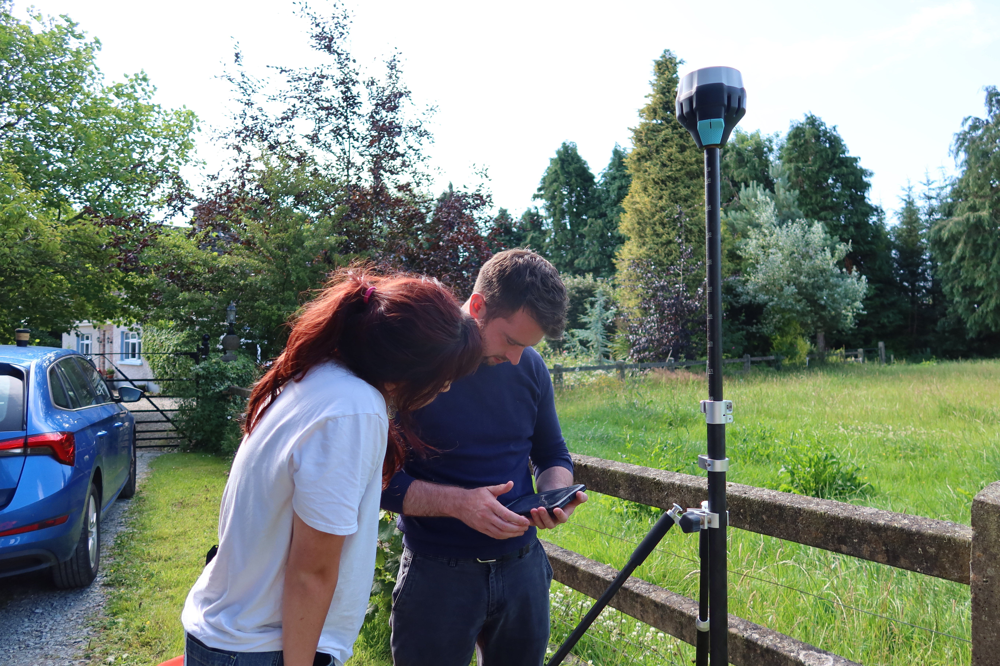
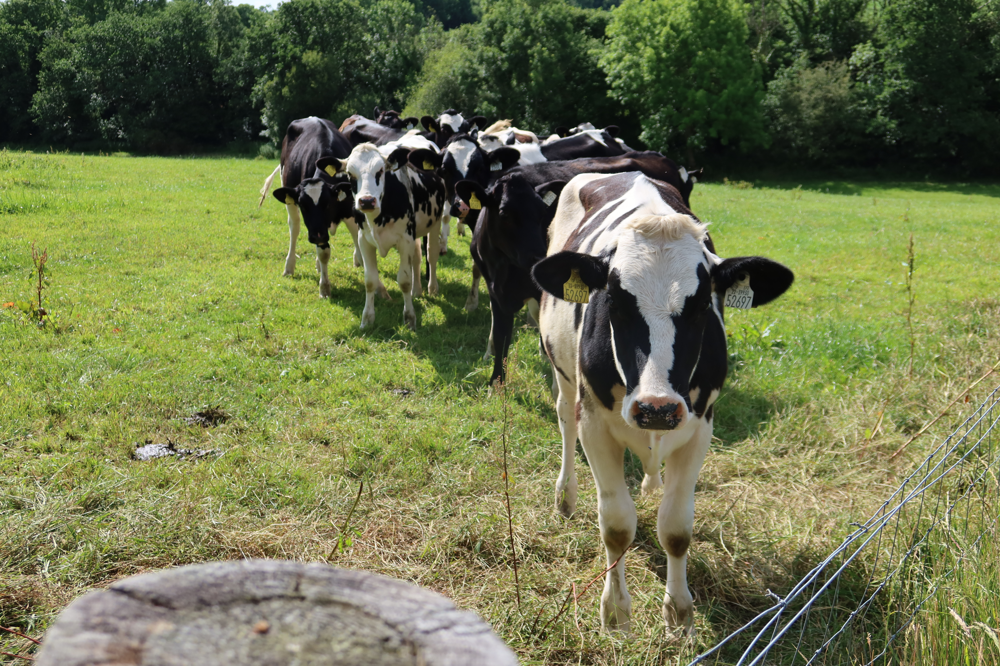
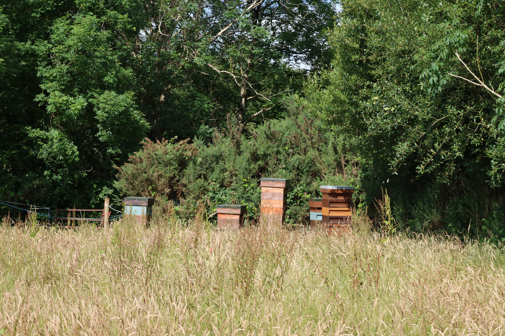
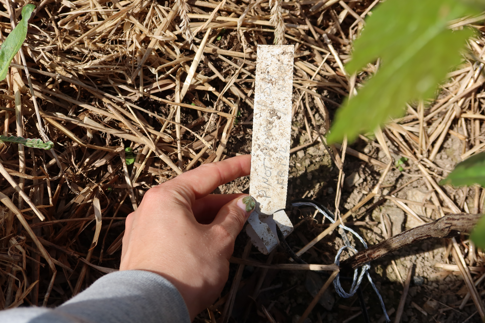
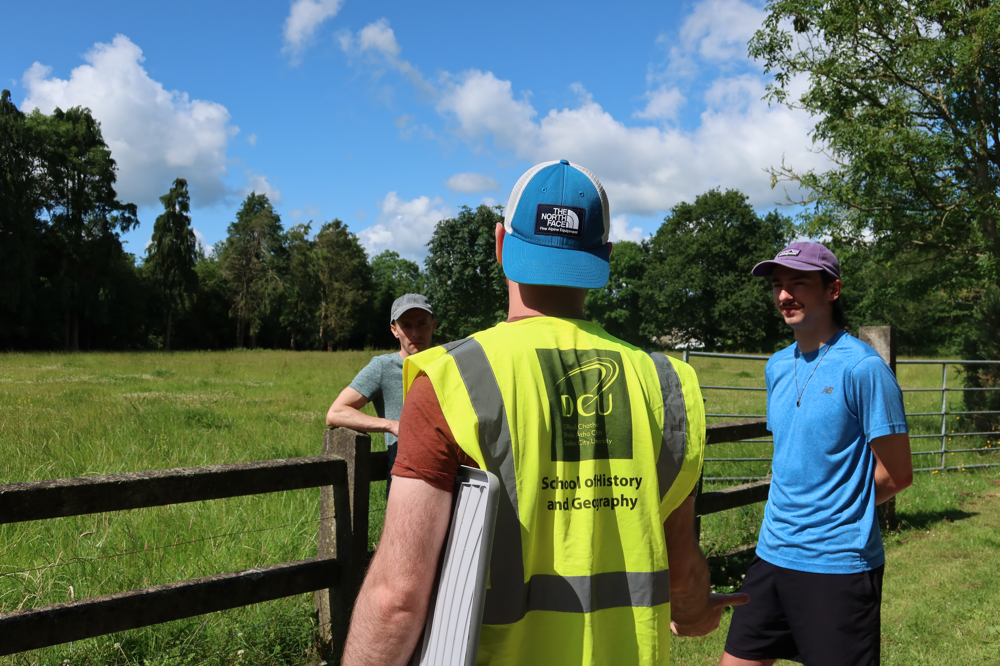
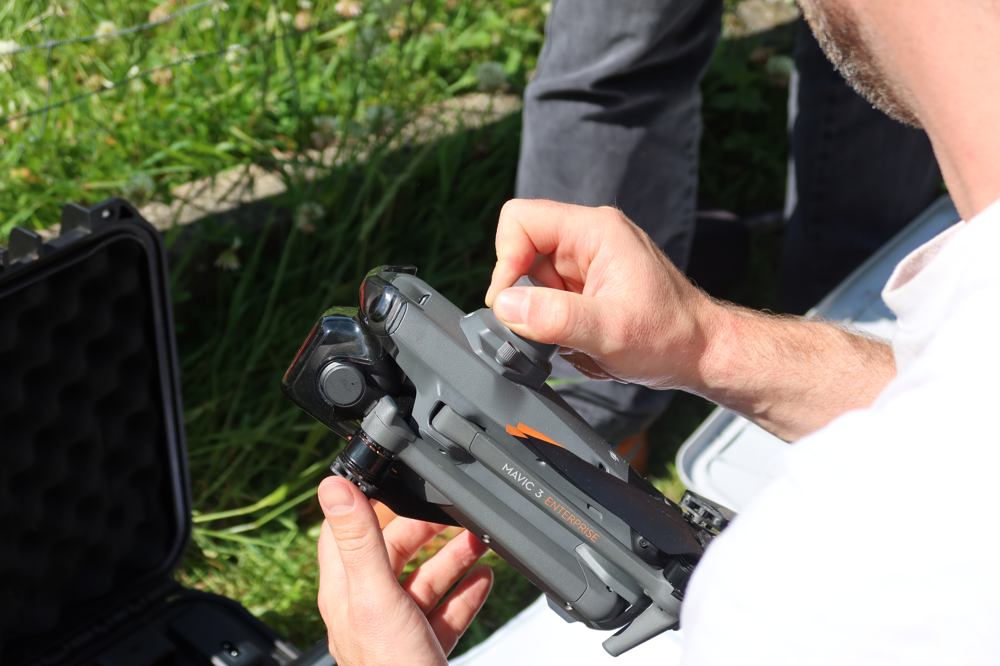
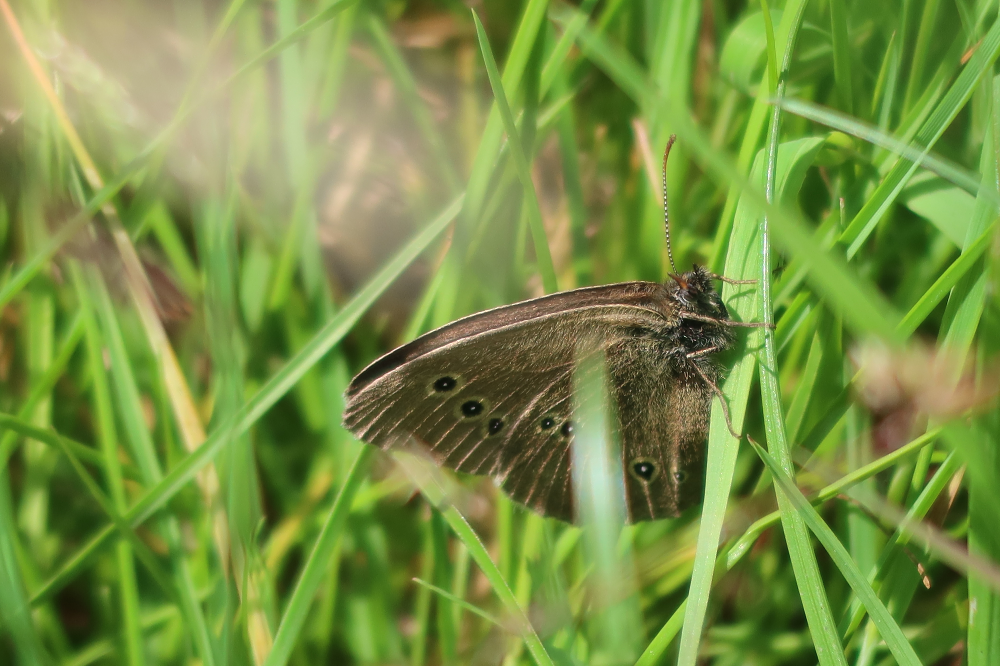
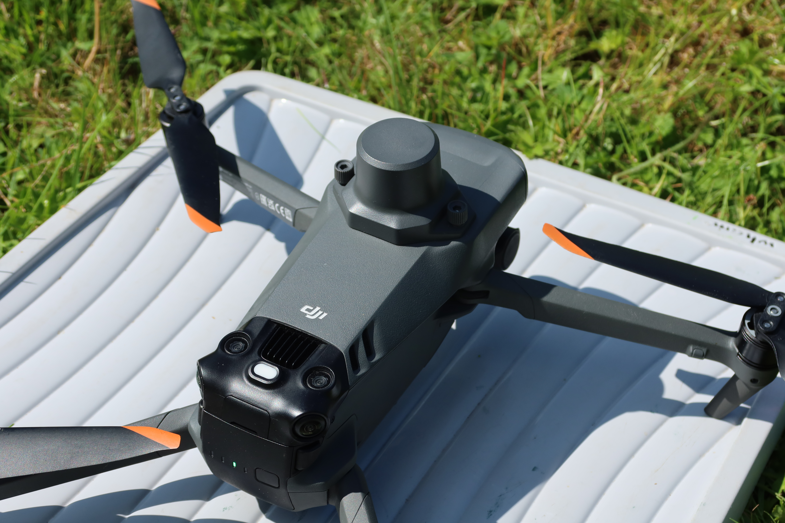
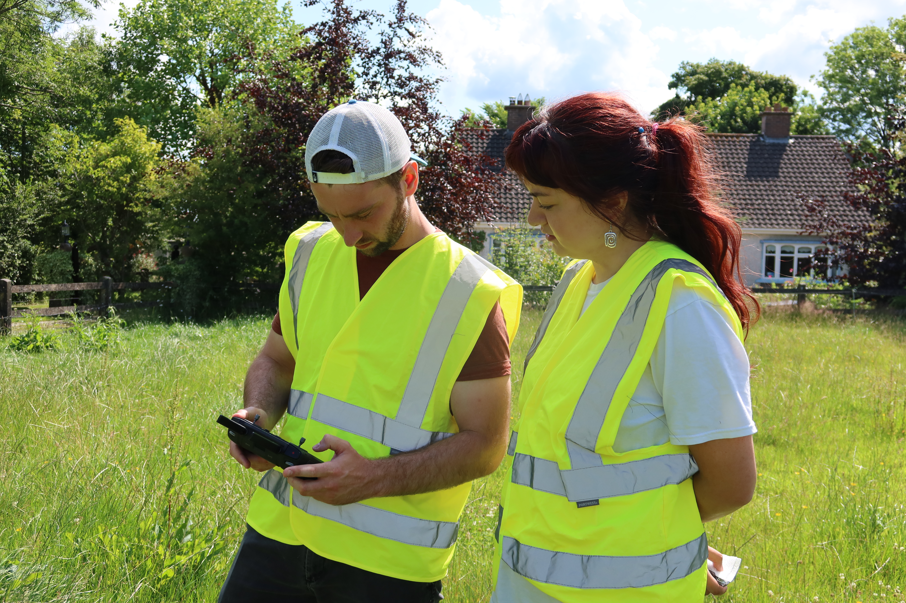
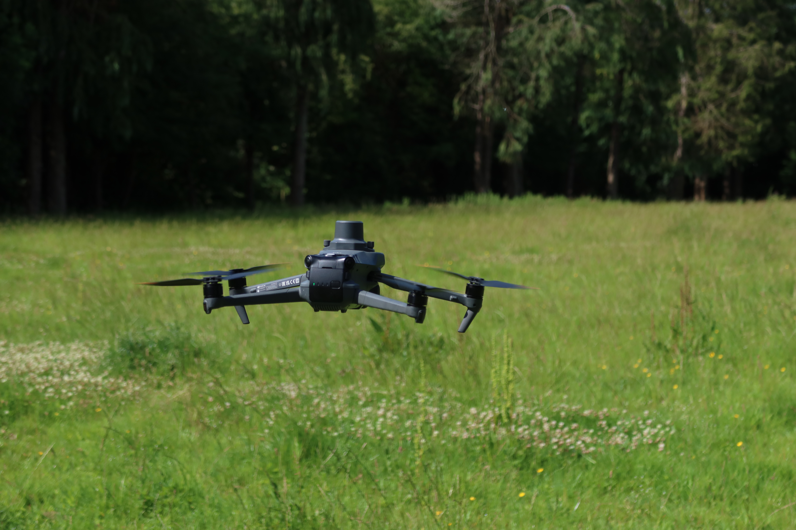
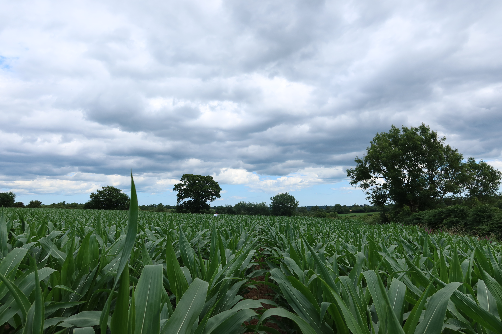
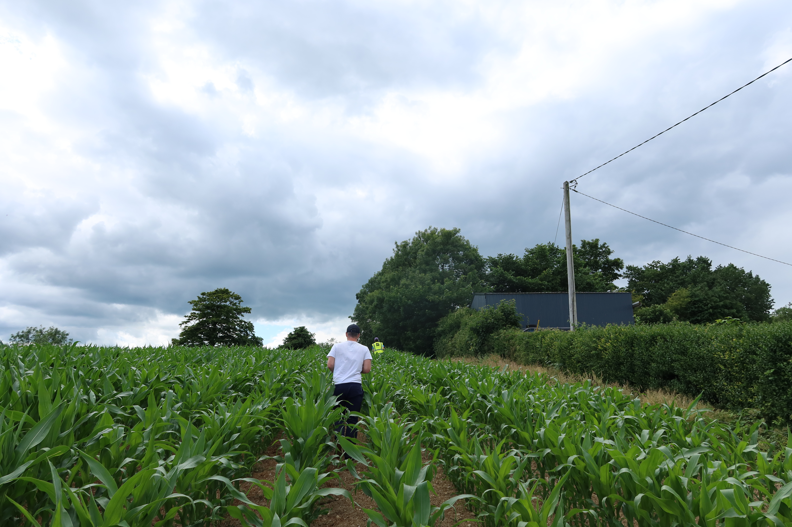
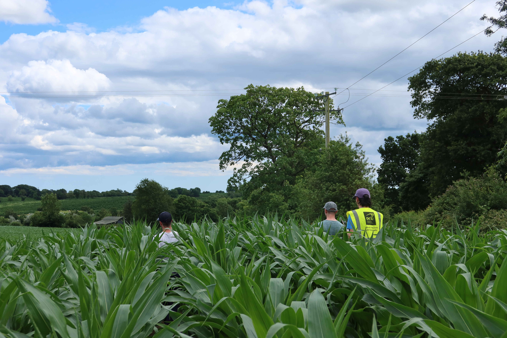
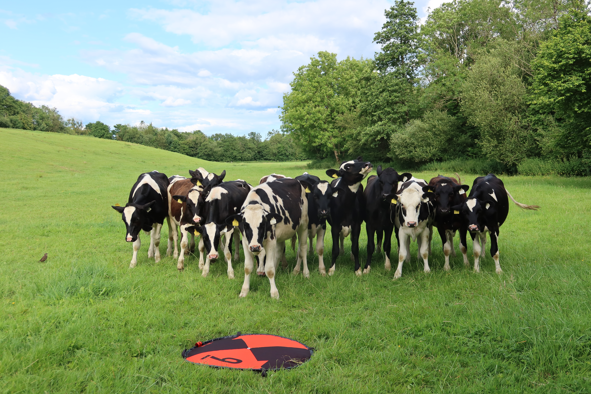
🌳 Case Study 3: Historic Hedgerows & Organic Grazing
Farm 3 featured mature hedgerow networks, some with historical double‑ditch features and organic grazing. These habitats support structural complexity, robust carbon sequestration, and vital wildlife corridors.


🔍 Reflections & Next Steps
These case studies illustrate the unique natural capital advantages of varied management approaches. Integrating these empirical findings into spatially explicit accounts will enable data-driven recommendations for land stewardship and policy.